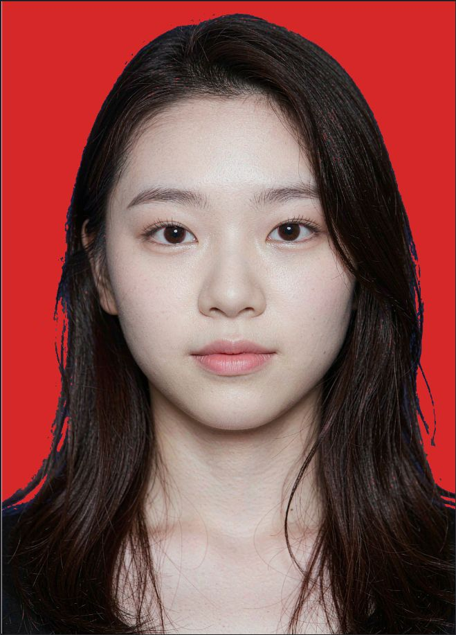

证件照白底换蓝底 / 红底
手上是白底照片，表格要蓝底；或者照片是蓝的，签证处非要白。换颜色是五分钟的活，但被接受的那张图还有别的规矩：像素尺寸要精确、底色要平、头发边上不能留一圈旧颜色。任一条不合，退回的理由通常和你的脸毫无关系。


先记住标准色值，别用眼睛挑
自动校验会取样背景，偏差超过窄范围就判不合格。你看着「够蓝」的颜色，在某个通道上可能差 30 个点：
- 标准蓝底：RGB(67, 142, 219) /
#438EDB——毕业证、工作证、简历、驾照 - 标准红底：RGB(255, 0, 0) /
#FF0000——保险、医保、各类认证 - 白底：RGB(255, 255, 255) /
#FFFFFF——护照、身份证、签证
两条实操提醒。底色必须平，不要为了「自然」加渐变或暗角，校验看的就是均匀度。穿的衣服要和目标底色拉开：白衬衫配白底，肩线直接消失，照片看起来像一颗浮着的头。
五步换底
【文件】→【打开】，或把文件拖到画布上。确认右侧图层面板选中的是照片那一层——后面所有操作都只作用于选中图层。
选魔术橡皮擦，功率就是容差，默认 15。先在背景最平的地方点一下，同色像素立刻透明，棋盘格就是擦掉了。证件照背景常有轻微明暗过渡，起步用低功率，暗角单独多点几次，而不是一次性把功率拉高——拉高会连肩膀一起吃。
Contiguous 默认关闭，意味着它清掉整层里所有同色像素，不限于你点的那片连通区域。人像上这点很重要：如果衣服是浅灰、接近背景色，高功率会直接在衣服上开洞。点之前先把肩膀放大看一眼。

这个编辑器没有羽化功能，没有半径可填。替代做法：保持抗锯齿开启（它会软化边界一像素，约等于 1 px 羽化），发际线残留旧色时把功率降到 10 到 12 再点一次，还不行就换橡皮擦小笔刷在 200% 下沿轮廓收边。
【图层】→【新建】 建一层，再用 【图层】→【移动】→【向下】 压到人物下面。把颜色设成目标色值，选填充工具点一下透明区域，底色就出现在人物背后，人物本身一个像素都没动。也可以直接用形状工具画一个铺满画布、填好色的矩形。
无论哪种，都要检查边缘：橡皮擦漏掉的一圈旧底，在新底色上会变成一条颜色不对的边，比原来显眼得多。
常见要求是一寸 295×413 像素、二寸 413×579 像素，对应 25×35mm 和 35×49mm（300 DPI）。用 【图片】→【调整大小】 填宽度，高度按原比例自动算；比例和规范对不上时，先用裁剪工具裁到对的构图，别硬拉。
最后 【文件】→【导出】，JPG 质量 90 以上。底色已经是实色层，没有透明可丢，所以 JPG 完全够用；PNG 只适合自己存档，多出来的体积对报名系统毫无意义。
- 去找羽化设置——这里没有。柔边靠抗锯齿加低功率二次点击，再不行用橡皮擦。
- 合并图层之后再擦背景——照片已经并到白底上，橡皮擦没有透明可揭示。始终保持照片是独立图层。
- 用手吸的颜色——考试和签证系统比对的是标准值。用上面的色号。
- 忘了尺寸检查——底色再完美，像素不对也会在有人看之前被系统退回。
- 把「另存为」当导出——那存的是工程文件。要交的图片只能【文件】→【导出】。
与其修，不如拍对：一次过的证件照
换底色能救的只是「颜色不对」，救不了光。拍一张能过审的证件照，四条就够：
- 光要软且匀。 面对窗户站，让光从正前方来，不要侧光、不要顶灯直打。单侧光会在脸上留半边阴影，换底色之后阴影还在，看起来像贴上去的。
- 背景要平、要离人远。 找一面纯色墙，人往前站半米。贴墙站会把自己的影子投上去，那个影子橡皮擦吃不掉，最后只能靠手工。
- 衣服和背景拉开明度。 白底穿浅灰，肩线就消失了。深色衣服配白底、浅色衣服配蓝红底，边界清晰，擦起来也省力。
- 手机端平、别用广角。 镜头和眼睛同高，稍微退远一点再裁。贴太近用广角，鼻子会变大，脸型也会变。
尺寸和比例提前想清楚：报名系统说 295×413，就按 25×35mm 的竖版构好图再拍，别拍成方图后期硬裁——裁掉的部分往往是头顶或肩膀，而这两处是校验构图时最先被看的。
常见问题 FAQ
换底色后头发边缘会出现白边吗？
先看第三步：这里没有羽化，靠的是抗锯齿加上低功率二次点击。仍有细白边就把功率降到 10 到 12 点一次发际线，或者换小笔刷橡皮擦在 200% 下收边。
蓝底可以换成护照要求的白底吗？
可以，流程一样：魔术橡皮擦擦掉蓝底 → 新建图层压到底层 → 填入 #FFFFFF → 调整到规定像素 → 导出 JPG。
最终照片的尺寸和分辨率有要求吗？
多数报名系统要一寸 295×413 像素或二寸 413×579 像素，对应 300 DPI。像素用【图片】→【调整大小】精确设置；DPI 只是打印指令，系统查的是像素。
相关教程推荐
拿一张证件照，做一版蓝底、一版白底，都是 295×413，然后放大 200% 对比发际线。